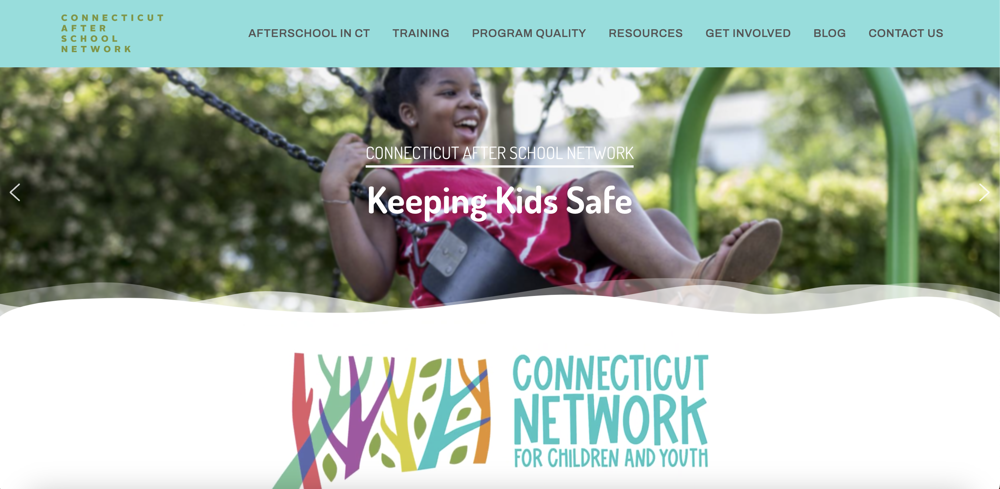

CT Afterschool Network Frontend Intern
I worked with a nonprofit organization, Connecticut Afterschool Network, as a Frontend Developer Intern. My role was to update and improve their outdated website.
The left image is the homepage of the redesigned website that I built. During this internship, I was able to make the website more secure by improving their domain services and revamp their current website with the use of WordPress Plugins, HTML, and CSS.
I created a wireframe of the website to get feedback from the team. During this process, I designed different elements for the website and organized various contents since the website was filled with information.
The right image is an example of some elements designed by me and how contents were organized throughout the website.
This image is what the website used to look like before the redesign.